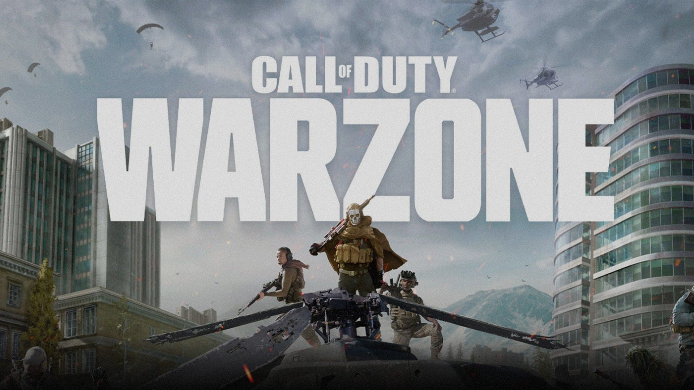

Call of Duty Warzone

Mínimo
- CPU: Intel Core i3-6100 o AMD Ryzen 3 1200
- RAM: 8 GB
- GPU: NVIDIA GTX 960 o AMD RX 470 (2 GB VRAM)
- OS: Windows 10 de 64 bits
- Almacenamiento: 1 TB
Nota: Para transmitir a 1080p se recomienda mejorar la gráfica, a 720p es óptimo.
Recomendado
- CPU: Intel Core i5-6600K / i7-4770 o AMD Ryzen 5 1400
- RAM: 12 GB
- GPU: NVIDIA GTX 1060 o AMD RX 580 (4 GB VRAM)
- OS: Windows 10 de 64 bits
- Almacenamiento: 1 TB